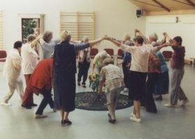

Meditative Tänze für junge und schon etwas ältere Menschen
Tänze aus dem meditativen wie sakralen Bereich werden in Kreis- oder auch in Doppelkreisform getanzt. Dazu erklingen ruhige, harmonische Weisen aus der internationalen Musikwelt.

Die Tänze sind meist einfach und leicht zu lernen. Sie wollen zur inneren Ruhe, zur Besinnung und auch zur Freude in gemeinsamer Runde führen.
Ein besonderes Erlebnis schafft die Verbindung von meditativen Tänzen und
Märchen.